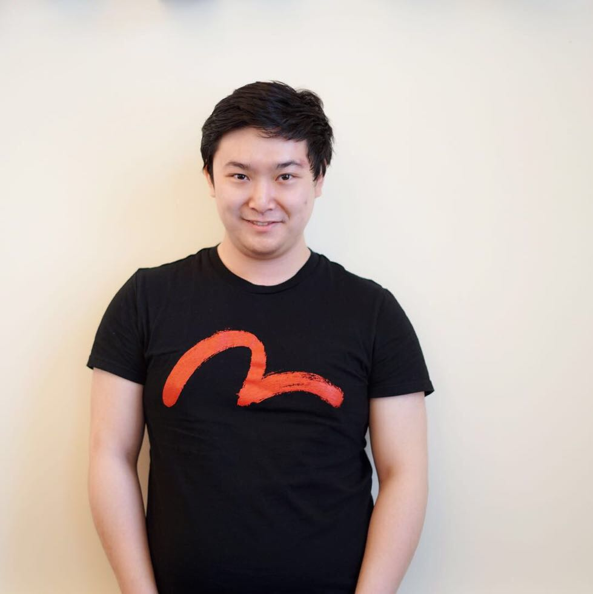

Ph.D. student
Department of Electrical & Computer Engineering (ECE)
Cornell University
Membership: ACM, IEEE, AAAI, CCF member
Email: hz459[at]cornell.edu / hzhang[at]cse.cuhk.edu.hk
Office: Rm 208, Philips Hall, Cornell University, Ithaca NY 14850.
Hang Zhang is currently a second year Ph.D. student in Department of Electrical & Computer Engineering at Cornell University. He earned his Master of Philosophy (M.PHIL) degree from the Department of Computer Science & Engineering, The Chinese University of Hong Kong, under the supervision of Prof. Evangeline F. Y. Young. Before that, he received his B.Eng degree from Sichuan University (SCU) in 2015, where he worked with Prof. Xiaohai He.
His current research investigates algorithms and theories in deep learning, machine learning and their applications in related areas such as robotics, computer vision and data mining . His previous research in the area of Computer-aided Design (CAD) and Electronic Design Automation (EDA) has been recognized with a Best Paper Award (News) from the 26th IEEE International Symposium on Field-Programmable Custom Computing Machines (FCCM'2018), and a Best Paper Award (News) from the ACM International Symposium on Physical Design 2017 (ISPD'2017).
Besides the above research, he is also interested in various areas of data visualization and human-computer interaction for applications like interactive machine learning education or financial data service. More details could be
approached via machine learning playground.
[ 09/2018 ] Our BigRedLidar dataset regarding point cloud segmentation will be released soon via our website.
[ 05/2018 ] Our paper Fast and Accurate Estimation of Quality of Results in High-Level Synthesis with Machine Learnin has won Best Paper Award at FCCM2018 (News link: News)
[ 08/2017 ] I have successfully passed my oral defense for my M.Phil study.
[ 06/2017 ] I will come to E Tiger Capital Management LLC as a research assistant to work on deep learning for applications in finance, especially deep portfolios.
[ 04/2017 ] I will come to Cornell University for my Ph.D. study this fall.
[ 03/2017 ] Our paper Bilinear Lithography Hotspot Detection has won Best Paper Award at ACM International Symposium on Physical Design 2017 (News link: CUHK research excellence ).
Fast and Accurate Estimation of Quality of Results in High-Level Synthesis with Machine Learning,
Steve Dai, Yuan Zhou, Hang Zhang, Ecenur
Ustun, Evangeline F.Y. Young and Zhiru Zhang,
IEEE International Symposium on Field-Programmable Custom Computing Machines (FCCM), 2018.
(
Best Paper Award
)
[pdf]
A New Regularized Matrix Discriminant Analysis (R-MDA) Enabled Human-Centered EEG Monitoring Systems,
Jie Su, Linbo Qing, Xiaohai He, Hang
Zhang,
Jing Zhou, and Yonghong Peng.
IEEE Access, 2018.
[pdf][News
]
Extreme Bilinear Learning Machine for Lithography Hotspot Detection,
Hang Zhang, Fengyuan Zhu, Bentian Jiang, Haocheng Li, Evangeline F.Y. Young, and Bei Yu.
ACM Transactions on Design Automation of Electronic Systems (TODAES), 2017. (Submitted)
Minimizing Thermal Gradient and Pumping Power in 3D IC Liquid Cooling Network Design,
Gengjie Chen, Jian Kuang, Zhiliang Zeng, Hang
Zhang,
Evangeline F.Y. Young, and Bei Yu.
ACM/IEEE Design Automation Conference (DAC), Austin, TX, June 3–7, 2017.
[pdf][slides]
Bilinear Lithography Hotspot Detection,
Hang Zhang, Fengyuan Zhu, Haocheng Li, Evangeline F. Y. Young, and Bei Yu.
ACM International Symposium on Physical Design (ISPD), Portland OR, USA, Mar. 19-22, 2017. (
Best Paper Award
)
Robust Matrix Regression,
Hang Zhang, Fengyuan Zhu, and Shixin Li.
Technical report in arXiv, 2016.
[pdf]
VLSI Layout Hotspot Detection Based on Discriminative Feature Extraction,
Hang Zhang, Haoyu Yang, Bei Yu, and Evangeline F. Y. Young.
IEEE Asia Pacific Conference on Circuits and Systems (APCCAS), Jeju, Korea, Oct. 25-28, 2016. (Invited Paper)
[pdf][slides]
Enabling Online Learning in Lithography Hotspot Detection with Information-Theoretic Feature Optimization,
Hang Zhang, Bei Yu, and Evangeline F. Y. Young.
IEEE/ACM International Conference on Computer-Aided Design (ICCAD), Austin TX, USA, Nov. 7-10, 2016.
[pdf][slides]
RippleFPGA: A Routability-Driven Placement for Large-Scale Heterogeneous FPGAs,
Chak-Wa Pui, Gengjie Chen, Wing-Kai Chow, Jian Kuang,
Ka-Chun Lam,
Peishan Tu, Hang Zhang, Evangeline F.Y. Young, and Bei Yu.
IEEE/ACM International Conference on Computer-Aided Design (ICCAD), Austin TX, USA, Nov. 7-10, 2016. (Invited Paper)
[pdf][slides]
Excellent Bachelor Thesis Award at SCU (Top 1%), 2015.
Talents Project in Wu Yuzhang Honors College at SCU (
Top 0.1%
), 2013-2015.
TA 2015-2016 fall CUHK ENGG
2440A Discrete Mathematics for
Engineers
Instructor: Bogdanov Andrej
Grader 2018-2019 fall Cornell ECE
2720 Data Science for Engineers
Instructor: Aaron Wagner